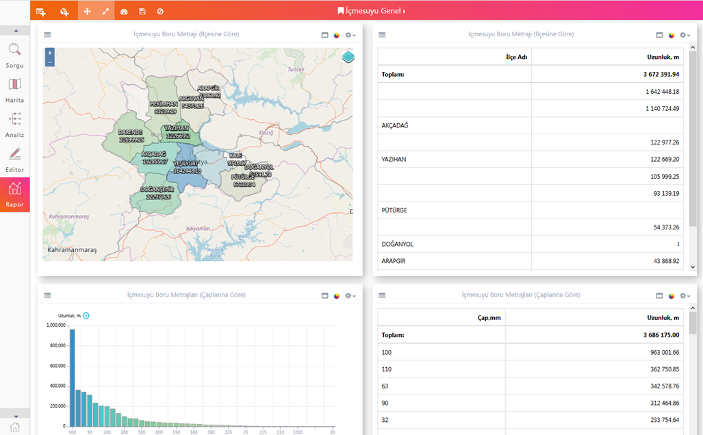

ODAGIS+ Web/Mobil arayüzünde bütünleşik olarak Rapor aracı da yer almaktadır. Bu Rapor aracı vasıtasıyla Yönetici arayüzünden istenilen Rapor/Gösterge Şablonu(Dashboard) oluşturularak, ilgili kullanıcı veya kullanıcı gruplarına açılabilir. Benzer şekilde tüm kullanıcılar kendilerine ait rapor sayfalarını/gösterge panellerini oluşturabilirler.
